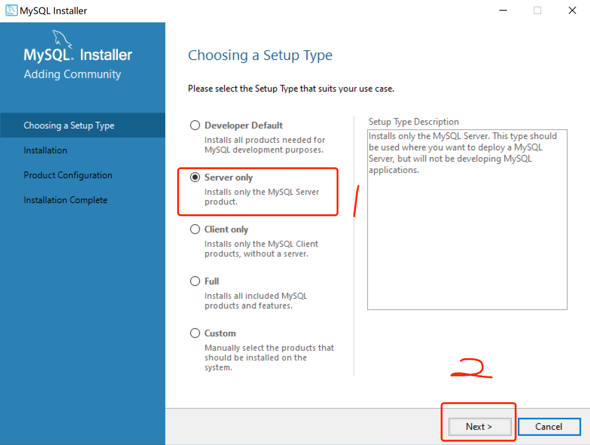
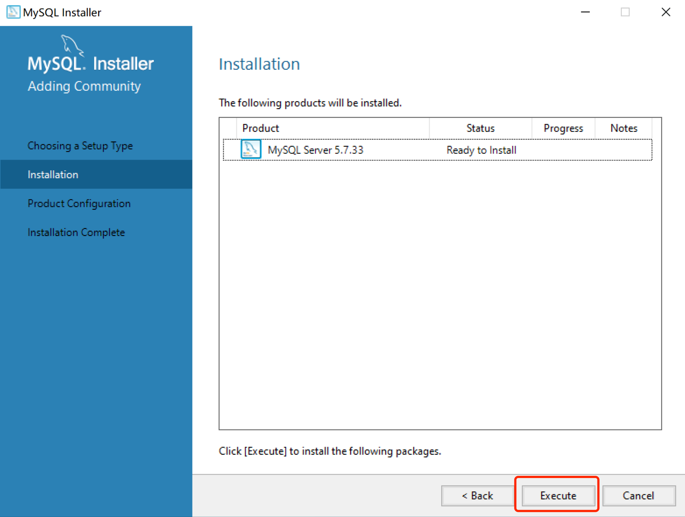
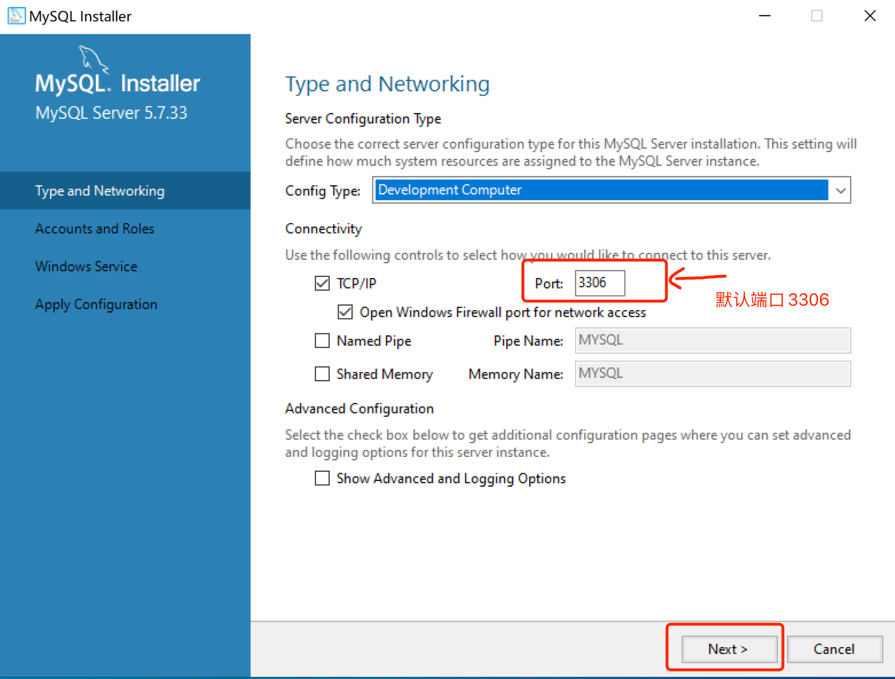
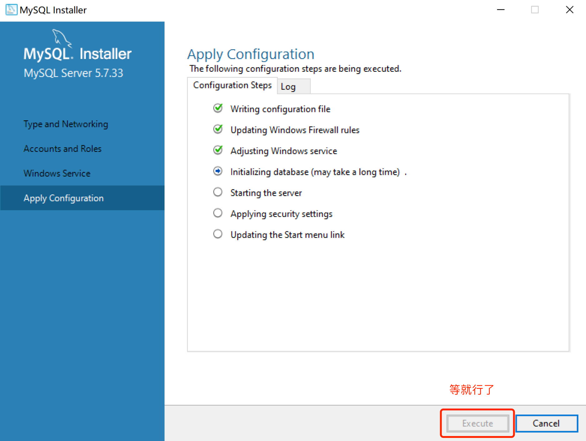
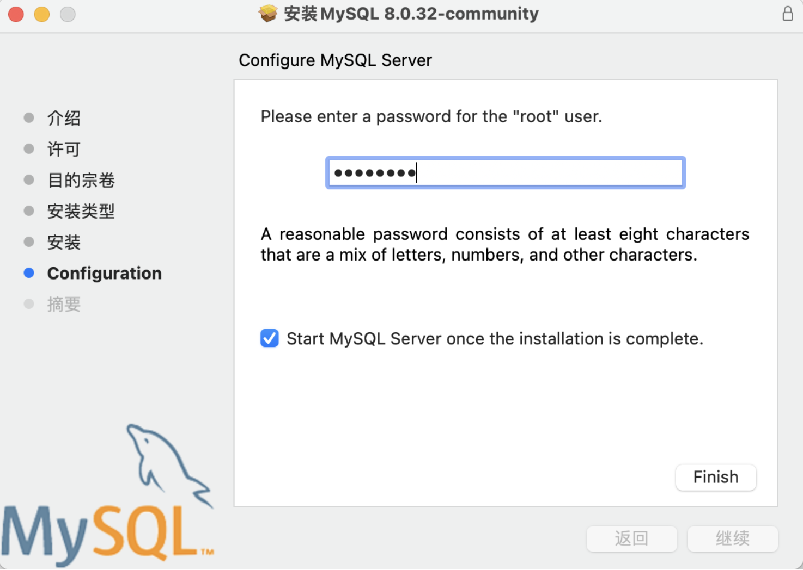

十二、MySQL数据库
一、MySQL数据库的介绍
1、发展史
1996年，MySQL 1.0
2008年1月16号 Sun公司收购MySQL。
2009年4月20，Oracle收购Sun公司。
MySQL是一种开放源代码的关系型数据库管理系统（RDBMS），使用最常用的数据库管理语言--结构化查询语言（SQL）进行数据库管理。
MySQL是开放源代码的，因此任何人都可以在General Public License的许可下下载并根据个性化的需要对其进行修改。
MySQL因为其速度、可靠性和适应性而备受关注。大多数人都认为在不需要事务化处理的情况下，MySQL是管理内容最好的选择。
2、MySQL简介
MySQL是一个关系型数据库管理系统，由瑞典MySQLAB 公司开发，目前属于 Oracle 旗下产品。MySQL是最流行的关系型数据库管理系统之一，在WEB 应用方面，MySQL是最好的 RDBMS (RelationalDatabase Management System，关系数据库管理系统)应用软件MySQL所使用的SQL 语言是用于访问数据库的最常用标准化语言。MySQL软件采用了双授权政策，分为社区版和商业版，由于其体积小、速度快、总体拥有成本低，尤其是开放源码这一特点，一般中小型网站的开发都选择MySQL 作为网站数据库
3、社区版本和企业版本的区别
主要的区别有以下两点。
- 企业版只包含稳定之后的功能，社区版包含所有Mysql的最新功能。
也就是说，社区版是企业版的测试版，但是，前者的功能要比后者多。
- 官方的支持服务只针对企业版，用户在使用社区版时出现任何问题，Mysql官方概不负责。
MySQL如何下载
进入MySQL官网（https://www.mysql.com） 查看底部下载-https://dev.mysql.com/downloads/mysql/
二、数据库的分类
关系型与非关系型数据库
1、关系型数据库的优势：
- 复杂查询
可以用SQL语句方便的在一个表以及多个表之间做非常复杂的数据查询
- 事物支持
使得对于安全性能很高的数据访问要求得以实现
2、非关系型数据库的优势：
- 性能
NOSQL是基于键值对的 可以想象成表中的主键和值的对应关系 不需要经过SQL层的解析 所以性能很高
- 可扩展性
同样也是也因为基于键值对 数据之间没有偶尔性 所以非常容易水平扩展
三、安装与Navicat使用
1、MySQL安装
3.1.2 installer的安装方式
先去mysql官网下载好安装包. (https://dev.mysql.com/downloads/)







3.1.3 免安装方式(推荐)
说明
MySQL关是一种关系数据库管理系统，所使用的 SQL 语言是用于访问数据库的最常用的 标准化语言，其特点为体积小、速度快、总体拥有成本低，尤
其是开放源码这一特点，在 Web 应用方面 MySQL 是最好的 RDBMS(Relational Database
Management System:关系数据 库管理系统)应用软件之一。
首先:要先进入mysql官网里(Mysql的官网-->https://www.mysql.com/)，下面是详细步骤:↓
3.1.3.1、下载安装包
（1）进入官网后，点击"Dowload"，然后⻚面往下拉

（2）接下来看到的⻚面是这样的，红色框框的链接就是 mysql社区版，是免费的mysql版本，然后我们点击这个框框 的链接:↓

（3）接下来跳转到这个⻚面，在这里，我们只要下载社区 版的Server就可以了:↓
（4）下载免安装版(windows以外的其他系统除外)

这样，安装包就下载好了!
注意：安装的目录应当放在指定位置，，其次，绝对路径 中避免出现中文，推荐首选英文为命名条件!!!!(我的为参 考)

3.1.3.2、Mysql的配置
以管理员身份打开命令行(如下图所示)，一定要是管理员身份，否则由于后续部分命令需要权限，出现错误!

（1）下转到mysql的bin目录下:

（2）安装mysql的服务:mysqld --install

（3）初始化mysql，在这里，初始化会产生一个随机密码,如 下图框框所示，记住这个密码，后面会用到(mysqld --initialize --console)

（4）开启mysql的服务(net start mysql)

（5）登录验证，mysql是否安装成功!(要注意上面产生的随 机密码，不包括前面符号前面的空格，否则会登陆失败)，如果 和下图所示一样，则说明你的mysql已经安装成功!注意，， 一定要先开启服务，不然会登陆失败，出现拒绝访问的提示 符!!!

修改密码:
由于初始化产生的随机密码太复杂，，不便于我们登 录mysql，因此，我们应当修改一个自己能记住的密码!!

注意: 如果当前修改后无法使用Navicat无法连 接数据库 可以使用如下方式进行重新修改密码
ALTER USER 'root'@'localhost' IDENTIFIED WITH mysql_native_password BY '123456';
再次登录验证新密码:

3.1.3.3、设置系统的全局变量:
为了方便登录操作mysql，在这里我们设置一个全局 变量:↓
（1）点击"我的电脑"-->"属性"-->''高级系统设置''-->''环 境变量'',接下来如下图所操作
（2）把新建的mysql变量添加到Path路径变量中，点击 确定，即完成:
配置完成之后，每当我们想要用命令行使用mysql 时，只需要win+R，-->输入"cmd"打开命令行，之后输入登录 sql语句即可。
（3）在mysql目录下创建一个ini或cnf配置文件，在这里 我创建的是ini配置文件，里面写的代码是mysql的一些基本配 置

[mysqld]
character-set-server=utf8mb4
bind-address=0.0.0.0
port=3306
default-storage-engine=INNODB
[mysql]
default-character-set=utf8mb4
[client]
default-character-set=utf8mb4
就这样，一个免安装版的Mysql就安装并配置完成了
3.1.3.4、可能会出现的问题
（1）"由于找不到MSVCR120.dll，无法继续执行代码。重新安装程 序可能会解决此问题" 或者 "由于找不到 VCRUNTIME140_1.dll，无法继续执行代码。重新安装程序可 能会解决此问题"
（2）命令参考:
-
安装服务:mysqld --install
-
初始化:mysqld --initialize --console
-
开启服务:net start mysql
-
关闭服务:net stop mysql
-
登录mysql:mysql -u root -p
Enter PassWord:(密码)
-
修改密码:alter user 'root'@'localhost' identified by 'root';(by 接着的是密码)
-
标记删除mysql服务:sc delete mysql
3.1.4 Mysql绿色版卸载
3.1.4.1、关闭Mysql服务
关闭服务可以使用命令行,也可以在「任务管理器」的「服务」里进行关闭，也可以用命令行关闭
管理员身份运行命令行（cmd）: net stop mysql
3.1.4.2、删除Mysql的注册表
(1) Win+R打开运行界面，在输入框中输入 regedit 进入系统注册表窗口

(2) 分别在以下目录中找到 MySQL 的注册表，鼠标右键直接删除MySQL目录中的 EventMessageFile 和 TypesSupported 两个文件就好了,如果对应的目录中没有,就不用删除了，也可以搜索注册表: 在系统注册表窗口选择「编辑」 — 选择「查找」 — 输入 「MySQL」进行查找,将找到的MySQL目录中的 EventMessageFile 和 TypesSupported 两个文件进行删除
HKEY_LOCAL_MACHINE/SYSTEM/ControlSet001/Services/Eventlog/Application/MySQLHKEY_LOCAL_MACHINE/SYSTEM/ControlSet002/Services/Eventlog/Application/MySQLHKEY_LOCAL_MACHINE/SYSTEM/CurrentControlSet/Services/Eventlog/Application/MySQL
3.1.4.3、移除Mysql服务
(1) 以管理员身份使用命令行(cmd)进入MySQL的 bin 目录下
(2) 执行移除 MySQL服务的命令 : mysqld -remove
(3) 当看到有Service successfully removed时，则表示移除Mysql服务成功
3.1.4.4、删除Mysql文件
将Mysql安装目录下的文件全部删除即可
OK,至此,MySQL绿色版卸载工作全部完成.
接下来是MySQL的图形化界面工具. 推荐用Navicat. 好多年了, 很好用. 安装的时候一路确定.
2、Mac安装
Mac安装MySQL
1、下载
https://dev.mysql.com/downloads/mysql/
下载安装包版本.dmg
需要注意，当前如果是m芯片 则下载ARM的
不登录下载

2.安装
打开下载好的.dmg文件，再点击里面的.pkg文件，之后会弹出对话框，点击【允许】，开始正式安装。
点击允许
一路点击继续到Configuration，Configuration页面有两个选择：
-
使用强密码加密。MySQL 8支持基于SHA256的更强的认证方式，所有新安装的mysql server建议使用这个方式。clients或connectors如果不支持这个方式，就不能连接到这个mysql server。
-
使用传统密码加密。当需要与MySQL 5.x连接器和客户端兼容且客户端升级不可行时，应使用传统身份验证方法
可以根据需求选择密码加密的方式：如果是因为新安装的，就选择强密码加密；如果想要兼容MySQL 5.x的，就选择传统密码加密。
这里设置8位密码。他建议我们设置有字母、数字和其他符号混合的密码。这里设置的密码用于以后登录，不要忘记了。
最好密码设置为：12345678

到这里，我们已经安装完MySQL了。
打开系统设置，发现MySQL不仅安装成功，还正在运行
3. 配置
打开～/.zshrc文件，添加如下内容。保存退出。并让环境变量马上生效。最后查看一下mysql的版本，如果出现版本，就说明配置成功。
vim ~/.zshrc
输入当前内容 配置环境变量
#mysql
export MYSQL_HOME=/usr/local/mysql
export PATH=$MYSQL_HOME/bin:$PATH
4. 进入MySQL
使用先前设置的密码登录。
mysql -u root -p

3、Navicat使用


哦了, 至此, Navicat可以操纵你的数据库了.
四、进入到MySQL数据库
1、简单模式
C:\Users\xlg>mysql -uroot -p
Enter password: ******
2、标准模式
C:\Users\xlg>mysql -h127.0.0.1 -uroot -p
mysql -hlocalhost -uroot -p
3、参数所代表的含义：
h:host 主机（localhost IPV4 127.0.0.1）
u:root 用户
p:password 密码
五、对于MySQL数据库的操作
1、对于库与表进行操作
- 查看所有的数据库
show databases;
- 选择数据库
use 库名
- 查看当前库下有哪些表
show tables;
- 查看当前所在库
select database();
- 创建数据库
create database 库名;
- 查看创建库信息
show create database 库名;
- 删除库/表 drop database 库名;
drop table 表名;
- 创建库并设置字符编码
create database lucky character set utf8;
- 查看表结构
desc 表名;
- 查看创建表语句
show create table lucky;
- 撤销当前命令
\c
-
数据库的退出
-
\q
- exit
- quit
2、注意
- MySQL命令以英文的分号作为结束
- SQL命令不区分大小写
- 在进入到一个数据库中在进入到另外一个的时候 不需要退出数据库 而是使用use再次进行数据库的切换
- windows下表名库名不区分大小写 Linux下严格区分
- MySQL数据库的名称具有唯一性 每个库中的表的名称也具有唯一性(库名或者一个库中的表名不要出现相同的名称)
- 当在输入命令的时候输入完以后 添加分号不能执行命令 那么查看一下左侧是否存在引号没有闭合的情况
六. 表的操作
1、表的概念
在所有关系型数据库中, 所有的数据都是以表格的形式进行存储的. 那表格应该如何进行设计呢? 其实这里蕴含了一个映射关系的.
比如, 我们想要存学生信息. 那我们先思考. 在你未来的规划中, 一个学生应该会有哪些数据存在?
学生: 学号(唯一标识), 姓名, 生日, 家庭住址, 电话号等信息. OK. 我们抛开数据库不谈. 想要存储这些数据, 表格创建起来的话应该是是这样的:

OK. 按照这个规则来看. 每一条数据对应的就是一个人的信息.
2、创建表
创建表有两种方案:
- 用SQL语句创建表格
sql
create table student(
sno int(10) primary key auto_increment,
sname varchar(50) not null,
sbirthday date not null,
saddress varchar(255),
sphone varchar(12),
class_name varchar(50)
)
数据类型:
int 整数
double小数
varchar 字符串
date 时间(年月日)
datetime 时间(年月日时分秒)
text 大文本
约束条件:
primary key 主键, 全表唯一值. 就像学号. 身份证号. 能够唯一的确定一条数据
auto_increment 主键自增.
not null 不可以为空.
null 可以为空
default 设置默认值
- 用Navicat图形化工具来创建


七、MySQL表的创建
字段类型
1、数值类型
| 类型 | 大小 | 范围(有符号) | 范围(无符号) | 用途 |
|---|---|---|---|---|
| tinyint | 1字节 | （-128,127） | （0,255） | 小整数值 |
| int | 4字节 | （-2147483648, 2147483647) | (0,4294967295) | 大整数值 |
| float | 4字节 | 单精度浮点型 | ||
| double | 8字节 | 双精度浮点型 |
创建表语句
mysql> create table testnum(
-> ttinyint tinyint,
-> tint int,
-> tfloat float(6,2),
-> tdouble double(6,2),
-> );
创建表的主体结构：
create table if not exists 表名(
字段名称 字段类型 约束条件 字段说明,
字段名称 字段类型 约束条件 字段说明,
...
)
表插入数据语句
指定字段名称插入值
insert into 表名(字段1,字段2...) values(值1,值2...)
不指定字段插入之
insert into 表名 values(值1,值2...)
2、字符串类型
| 类型 | 大小 | 用途 |
|---|---|---|
| char | 0-255字节 | 定长字符串 |
| varchar | 0-255字节 | 变长字符串 |
| text | 0-65535字节 | 长文本数据 |
| longtext | 0-4294697295字节 | 极大文本数据 |
字符串类型注意事项：
1) char和varchar的区别
- char执行效率高于varchar （但占用空间大）
- varchar相对于char节省空间
- char和varchar 类型的长度范围都在0-255之间
- varchar类型传入的值小于给定的长度 不会使用空格填充
七、INSERT 数据的添加
- 指定字段添加值
insert into 表名(字段1,字段2....) values(值1,值2...)
insert into user(sex,username) values(0,'lucky');
- 不指定字段添加值
insert into 表名 values(值1,值2...)
insert into user values(null,0,'lucky','我是lucky老师');
- 指定字段添加多个值
insert into 表名(字段1,字段2....) values(值1,值2...),(值1,值2...)...
insert into user(sex,username) values(1,'苍苍'),(0,'蒹葭');
- 不指定字段添加多个值
insert into 表名 values(值1,值2...),(值1,值2...)...
insert into user values(null,1,'xxx','xxx'),(null,0,'xxl','xxl');
注意事项： 指定字段与不指定字段在添加值的时候 按照从左至右依次对应给值
八、SELECT查询
- 不指定字段的查询（不建议）
select * from 表名
- 指定字段的数据查询(建议)
select 字段名1,字段名2... from 表名
select username,userinfo from user;
- 对查询的字段起别名
select username as u from user;
select username u from user;
九、UPDATE修改
- 修改一个字段的值
update 表名 set 字段名=值;
update user set username='帅气的lucky' where id = 3;
- 修改多个字段的值
update 表名 set 字段名1=值1,字段名2=值2...;
update user set sex=0,userinfo='xxx的个人简介' where id=7;
- 给字段的值在原有的基础上改变值
update user set sex=sex+2;
注意：
在进行数据的修改的时候 一定记得给定where条件 如果没有给定where条件 则修改的为整张表当前字段的值
十、DELETE 删除
主体结构：
delete from 表名 [where ...]
实例：
delete from user; 删除user表中所有的数据
注意：
删除 一定注意添加 where 条件 否则会删除整张表中的数据 并且auto_increment自增所记录的值不会改变 所以需要将自增归位
truncate 表名; 清空表数据
十一、WHERE条件
实例表结构：
+----------+-------------+------+-----+-----------------------+----------------+ | Field | Type | Null | Key | Default | Extra | +----------+-------------+------+-----+-----------------------+----------------+ | id | int(11) | NO | PRI | NULL | auto_increment | | sex | tinyint(4) | NO | | 1 | | | username | varchar(20) | YES | | NULL | | | age | tinyint(4) | NO | | 18 | | | userinfo | varchar(50) | NO | | 我是帅气的lucky老师啊 | | +----------+-------------+------+-----+-----------------------+----------------+
(1) 比较运算符
>
将id大于5 的性别 更改为0 年龄改为20岁
update user set sex=0,age=20 where id>5;
<
将id小于3 的性别 更改为0 年龄改为23岁
update user set sex=0,age=23 where id<3;
查看id小于4的 性别和用户名的字段数据
select sex,username from user where id<4;
>=
删除 id大于等于6的数据
delete from user where id>=6;
<=
查询年龄小于等于23的数据
select * from user where age<=23;
- =
查询性别为0的数据
select * from user where sex=0;
!=/<>
查询 用户名不等于lucky的所有数据
select * from user where username!='lucky';
select * from user where username<>'lucky';
(2) 逻辑运算符
- and 逻辑与 俩侧为真结果为真
查询年龄在18到23之间 不包括本身
select * from user where age>18 and age<23;
修改年龄为30 id大于1 小于等于2
update user set age=30 where id>1 and id<=2;
- or 逻辑或运算 俩侧条件满足一侧就可以
select * from user where age=10 or age=30;
select * from user where age>=10 or age<=30;
(3) order by 排序 升序/降序
升序
查询数据 按照年龄升序（默认）
select * from user order by age;
select * from user order by age asc;
查询数据 按照年龄降序
select * from user order by age desc;
(4) limit 取值
结构：
limit x 取出x条数据
limit x,y 从x的位置取出y条数据
取出3条数据
select * from user limit 3;
取出年龄最大/最小的一条数据
select * from user order by age desc limit 1;
select * from user order by age limit 1;
(6) like 模糊查询
- ’%字符‘ 查询以字符结尾的数据
查询以三字为结束的username的数据
select * from user where username like '%三';
- '字符%' 查询以字符开头的数据
select * from user where username like '赵%';
- '%字符%' 查询包含字符的数据
查询 userinfo中包含lucky的数据
select * from user where userinfo like '%lucky%';
十二、 聚合函数
- count 统计个数
- max 最大值
- min 最小值
- Sum 求和
- avg 求平均数
select count(*) as count,max(age),min(age),avg(age),sum(age) from user;
十三、 数据库的导入导出
- 导入
mysql -uroot -p 库名<demo.sql
- 导出
mysqldump -uroot -p 库名>demo.sql
dro
十四、Python操作MySQL
安装：
pip install pymysql;
使用： import pymysql
(1) 链接MySQL数据库
db = pymysql.connect(主机名,用户名,密码,数据库名)
db = pymysql.connect(host='localhost', user='root', password='123456', database='test')
(2) 设置字符集
db.set_charset('utf8')
(3) 创建游标对象
cursor = db.cursor()
(4) 执行SQL语句
cursor.execute(sql语句)
(5) 获取结果集
获取所有
cursor.fetchall()
获取一条
cursor.fetchone()
(6) 获取受影响的行数
cursor.rowcount
(7) 事物
pymysql默认开启了事物处理 所以在添加数据的时候 需要commit 或者rollback
实例：
try:
sql = 'insert into user values(null,1,"曹操",100,"曹操第一奸雄","魏国")'
print(sql)
cursor.execute(sql)
db.rollback()
except:
db.commit()
对于支持事务的数据库， 在Python数据库编程中，当游标建立之时，就自动开始了一个隐形的数据库事务。
commit()方法游标的所有更新操作，rollback（）方法回滚当前游标的所有操作。每一个方法都开始了一个新的事务。
(8) 关闭数据库连接
db.close()
(9) 拼凑正常完整的sql语句
print("select name,password from user where name=\""+username+"\"")
print("select name,password from user where name='"+username+"'")
print("select name,password from user where name='%s'"%(username))
print("select name,password from user where name='{}'".format(username))
print(f"select name,password from user where name='{username}'")